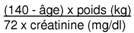

RÉSUMÉ DES CARACTÉRISTIQUES DU PRODUIT
ANSM - Mis à jour le : 04/08/2004
SOTALEX 20 mg/2 ml, solution injectable
2. COMPOSITION QUALITATIVE ET QUANTITATIVE
Chlorhydrate de sotalol ...................................................................................................................... 20 mg
Pour une ampoule de 2 ml.
Pour la liste complète des excipients, voir rubrique 6.1.
Solution injectable.
4.1. Indications thérapeutiques
· troubles du rythme ventriculaire graves, notamment tachycardies ventriculaires documentées symptomatique et invalidantes;
· stimulation ventriculaire programmée.
4.2. Posologie et mode d'administration
L'initiation du traitement ou le changement de posologie se feront après une évaluation médicale appropriée incluant contrôle ECG avec mesure du QT corrigé ainsi que le dosage de la kaliémie, évaluation de la fonction rénale et en tenant compte des traitements associés (voir rubrique 4.5).
Comme avec les autres agents anti-arythmiques, il est recommandé que SOTALEX soit initié et les doses augmentées sous surveillance du rythme cardiaque. La posologie doit être évaluée en fonction de la répons du patient. Les effets pro-arythmiques peuvent apparaître non seulement à l'initiation du traitement mais également à chaque changement de posologie.
En raison de ses propriétés bêta-bloquantes, le sotalol ne doit pas être arrêté brutalement, spécialement chez les patients ayant une ischémie cardiaque (angine de poitrine, infarctus du myocarde aigu) ou hypertension, afin d'éviter une aggravation de la maladie.
Dans le traitement des arythmies aiguës, la posologie par voie intraveineuse est comprise entre 20 et 120 mg (0,5 à 1,5 mg/kg).
La dose totale calculée sera administrée lentement sur une période de 10 minutes et pourra être répétée à 6 heures d'intervalle si nécessaire. Chez les patients à haut risque, comme ceux ayant eu un infarctus du myocarde aigu, avec ou sans insuffisance cardiaque congestive, une surveillance étroite hémodynamique et ECG est recommandée.
Pour les stimulations ventriculaires programmées la dose initiale de 1,5 mg/kg devra être administrée lentement en une période de 10 à 20 minutes, et suivie par une dose d'entretien de 0,2 à 0,5 mg/kg/heure.
En cas de substitution au SOTALEX oral, la posologie sera de 0,2 à 0,5 mg/kg/heure sans dépasser une dose totale journalière de 640 mg.
Chez l'insuffisant rénal, la posologie sera ajustée en fonction de la clairance à la créatinine, le sotalol étant excrété principalement par le rein.
|
Clairance de la créatinine (ml/min) |
Posologie recommandée |
|
> 60 |
dose usuelle |
|
30 - 60 |
demi-dose |
|
10 - 30 |
quart de dose |
|
< 10 |
éviter le traitement |
Formule de Cockcroft et Gault
|
Homme: |
 |
|
Femme: |
idem x 0,85 |
Si la créatinine est exprimée en μmol/l, diviser sa valeur par 88,4 (1 mg/dl = 88,4 μmol/l)
Chez l'insuffisant hépatique, aucun ajustement posologique n'est nécessaire.
Ce médicament EST CONTRE-INDIQUE dans les situations suivantes:
· syndromes du QT long, congénitaux ou acquis;
· torsades de pointes;
· allergie connue à l'un des constituants,
· asthme et broncho-pneumopathies chroniques obstructives;
· insuffisance cardiaque non contrôlée;
· choc cardiogénique;
· blocs auriculo-ventriculaires des 2ème et 3ème degrés non appareillés;
· angor de Prinzmétal;
· maladie du sinus (y compris bloc sino-auriculaire) non appareillée;
· bradycardie (< 45-50 battements/minute);
· phénomène de Raynaud et troubles artériels périphériques;
· phéochromocytome non traité;
· hypotension artérielle (exceptée celle due aux troubles du rythme);
· anesthésie entraînant une dépression myocardique;
· insuffisance rénale sévère (clairance de la créatinine inférieure à 10 ml/min);
· acidose métabolique;
· association avec les médicaments donnant des torsades de pointes suivantes:
o antiarythmiques de classe Ia (hydroquinidine, quinidine, disopyramide),
o antiarythmiques de classe III (amiodarone, dofétilide, ibutilide),
o neuroleptique benzamide (sultopride),
o et autres médicaments tels que: bépridil, cisapride, diphémanil, érythromycine IV, mizolastine, spiramycine IV, vincamine IV;
· association à la floctafénine
(voir rubrique 4.5).
Ce médicament EST GENERALEMENT DECONSEILLE dans les situations suivantes:
· en association avec:
o certains neuroleptiques phénothiaziniques (chlorpromazine, cyamémazine, lévomépromazine, thioridazine), benzamides (amisulpride, sulpiride, tiapride), butyrophénones (dropéridol, halopéridol), autres neuroleptiques (pimozide),
o halofantrine, pentamidine, moxifloxacine,
o certains antagonistes du calcium: diltiazem, vérapamil.
· au cours de l'allaitement.
4.4. Mises en garde spéciales et précautions d'emploi
Mises en garde spéciales
|
Ne jamais interrompre brutalement le traitement chez les angineux: l'arrêt brusque peut entraîner des troubles du rythme graves, un infarctus du myocarde ou une mort subite. |
|
L'effet indésirable le plus sérieux des médicaments antiarythmiques est l'aggravation des arythmies pré-existantes ou le déclenchement de nouveaux troubles du rythme. Les produits qui allongent l'intervalle QT, dont le sotalol, peuvent provoquer des torsades de pointes. Les facteurs favorisant cet effet ont été identifiés: · intervalle QT spontanément long (> 450 ms) avant le traitement; · bradycardies (< 60 battements par minute); · hypokaliémie ou hypomagnésémie, (notamment sous diurétiques proximaux); · taux sériques élevés de sotalol, soit par surdosage, soit par accumulation au cours d'une insuffisance rénale; · associations à d'autres produits favorisant des torsades de pointes (voir rubriques 4.3 et 4.5); · troubles du rythme ventriculaires graves; · les femmes paraissent avoir un risque accru de survenue de torsades de pointes. |
Les torsades de pointes sont dose-dépendantes et de ce fait surviennent le plus souvent lors de l'initiation du traitement ou lors d'une augmentation de la posologie.
Elles peuvent être symptomatiques (syncopes), elles peuvent régresser spontanément, plus rarement dégénérer en fibrillation ventriculaire.
Dans les essais cliniques, chez des patients ayant des troubles du rythme ventriculaire comportant un risque vital (tachycardies ventriculaires soutenues ou fibrillations ventriculaires), l'incidence des pro-arythmies sévères (torsades de pointes ou nouvelles tachycardies ventriculaires ou fibrillations ventriculaires) fut inférieure à 2 % à des doses ≤ à 320 mg. L'incidence a plus que doublé pour des posologies plus élevées.
Les patients qui présentent le risque le plus marqué de développer des effets pro-arythmiques graves sous sotalol (7 %) sont ceux qui ont une tachycardie ventriculaire soutenue et une insuffisance cardiaque. Une initiation du traitement à 80 mg et une adaptation posologique progressive permettent de réduire le risque de survenue d'effets pro-arythmiques.
Un allongement de QTc supérieur à 480 ms nécessite une surveillance étroite et une réévaluation du rapport bénéfice/risque.
Précautions d'emploi
· L'institution du traitement par voie IV se fera chez des malades hospitalisés en unité de soins intensifs.
L'injection se fera sous contrôle ECG et de la tension artérielle.
· Bradycardie
Si la fréquence s'abaisse au-dessous de 50-55 pulsations par minute au repos et que le patient présente des symptômes liés à la bradycardie, la posologie doit être diminuée. La bradycardie majore le risque de survenue de torsades de pointes.
· Bloc auriculo-ventriculaire du premier degré
Etant donné son effet dromotrope négatif, le sotalol doit être administré avec prudence aux patients présentant un bloc auriculo-ventriculaire du premier degré.
· Insuffisance cardiaque
Des précautions lors de l'initiation et de l'ajustement posologique avec sotalol chez les patients avec dysfonction ventriculaire gauche contrôlés par un traitement (tel que inhibiteur de l'enzyme de conversion, diurétique, digitalique,...) doivent être prises. Le sotalol du fait de ses propriétés bêta-bloquantes peut diminuer la contractilité myocardique et entraîner une décompensation brutale de l'insuffisance cardiaque sévère.
· Infarctus du myocarde récent
Chez les patients en post-infarctus, avec dysfonction ventriculaire gauche, le bénéfice/risque d'un traitement par le sotalol doit être évalué. Si ce traitement s'avère nécessaire, l'initiation ainsi que l'adaptation posologique doivent être étroitement suivies. Le sotalol devra être évité chez les patients ayant une fraction d'éjection ≤ 40% sans arythmie ventriculaire grave.
· Perturbations électrolytiques
Le sotalol ne devra pas être utilisé chez les patients présentant une hypokaliémie ou une hypomagnésémie avant correction préalable du déséquilibre. L'équilibre électrolytique et acido-basique sera particulièrement suivi chez les patients en cas de diarrhée sévère ou prolongée ou chez les sujets recevant un traitement hypokaliémiant ou hypomagnésémiant.
· Réactions allergiques
Chez les patients susceptibles de faire une réaction anaphylactique sévère, quelle qu'en soit l'origine, en particulier avec des produits de contraste iodés ou la floctafénine (voir rubrique 4.5) ou en cours de traitement désensibilisant, le sotalol, en raison de ses propriétés bêta-bloquantes, peut entraîner une aggravation de la réaction et une résistance à son traitement par l'adrénaline aux posologies habituelles.
· Thyrotoxicose
Le sotalol, en raison de ses propriétés bêta-bloquantes, est susceptible d'en masquer les signes cardiovasculaires.
· Psoriasis
Des aggravations de la maladie ayant été rapportées sous bêta-bloquant, l'indication mérite d'être pesée.
· Sujet âgé
Chez le sujet âgé, le respect absolu des contre-indications est impératif. On veillera à initier le traitement par une posologie faible et à assurer une surveillance étroite.
· Insuffisant rénal
En cas d'insuffisance rénale, il convient d'adapter la posologie à l'état de la fonction rénale.
· Sujet diabétique
Prévenir le malade et renforcer en début de traitement l'auto-surveillance glycémique. Les signes annonciateurs d'une hypoglycémie peuvent être masqués, en particulier tachycardie, palpitations et sueurs.
· Changements électrocardiographiques
Un allongement de l'intervalle QTc (> 480 ms) nécessite une surveillance étroite et une réévaluation du rapport bénéfice / risque. Le risque de torsades de pointes est proportionnel au degré d'allongement du QT.
· Anesthésie générale
Du fait de ses propriétés bêta-bloquantes, le sotalol peut entraîner une atténuation de la tachycardie réflexe et une augmentation du risque d'hypotension. La poursuite du traitement par le sotalol diminue le risque d'arythmie, d'ischémie myocardique et de poussées hypertensives. Il convient de prévenir l'anesthésiste que le patient est traité par le sotalol.
Si l'arrêt du traitement est jugé nécessaire, une suspension de 48 heures est considérée comme suffisante pour permettre la réapparition de la sensibilité aux catécholamines.
Dans certains cas, le traitement par le sotalol ne peut être interrompu.
Chez les malades atteints d'insuffisance coronaire, il est souhaitable de poursuivre le traitement jusqu'à l'intervention, étant donné le risque lié à l'arrêt brutal des bêta -bloquants.
En cas d'urgence ou d'impossibilité d'arrêt, le patient doit être protégé d'une prédominance vagale par une prémédication suffisante d'atropine renouvelée selon les besoins.
L'anesthésie devra faire appel à des produits aussi peu dépresseurs myocardiques que possible et les pertes sanguines devront être compensées.
· Sportifs
L'attention des sportifs est attirée sur le fait que cette spécialité contient un principe actif pouvant induire une réaction positive des tests pratiqués lors des contrôles antidopage.
4.5. Interactions avec d'autres médicaments et autres formes d'interactions
De nombreux médicaments peuvent entraîner une bradycardie. C'est le cas des antiarythmiques de classe Ia (quinidiniques, disopyramide), des béta-bloquants, de l'amiodarone et du sotalol pour les antiarythmiques de classe III, du diltiazem et du vérapamil pour les antiarythmiques de la classe IV et enfin des digitaliques, de la clonidine, de la guanfacine, de la méfloquine et des anticholinestérasiques indiqués dans le traitement de la maladie d'Alzheimer.
Le sotalol a des propriétés antiarythmiques particulières et est susceptible de provoquer des troubles du rythme graves (torsades de pointes) notamment en cas d'hypokaliémie.
Du point de vue des interactions médicamenteuses, il doit être considéré comme un antiarythmique et son association à un autre antiarythmique est TRES DELICATE, nécessitant une surveillance clinique et ECG étroite, voire CONTRE-INDIQUEE.
+ Floctafénine
En cas de choc ou d'hypotension dus à la floctafénine, réduction des réactions cardiovasculaires de compensation par le sotalol.
+ Médicaments donnant des torsades de pointes suivantes: antiarythmiques de classe Ia (quinidine, hydroquinidine, disopyramide) et de classe III (amiodarone, dofétilide, ibutilide), sultopride (neuroleptique benzamide), et autres médicaments tels que: bépridil, cisapride, diphémanil, érythromycine IV, mizolastine, spiramycine IV, vincamine IV...
Risque majoré de troubles du rythme ventriculaire, notamment de torsades de pointes.
+ Médicaments donnant des torsades de pointes suivantes: certains neuroleptiques phénothiaziniques (chlorpromazine, cyamémazine, lévomépromazine, thioridazine), benzamides (amisulpride, sulpiride, tiapride), butyrophénones (dropéridol, halopéridol), autres neuroleptiques (pimozide), ainsi que halofantrine, pentamidine, moxifloxacine
Risque majoré de troubles du rythme ventriculaire, notamment de torsades de pointes.
Si cela est possible, interrompre le médicament torsadogène non anti-infectieux. Si l'association ne peut être évitée, contrôle préalable du QT et surveillance ECG monitorée.
+ Antagonistes du calcium: diltiazem et vérapamil
Troubles de l'automatisme (bradycardie excessive, arrêt sinusal), troubles de la conduction sino-auriculaire et auriculoventriculaire et défaillance cardiaque (synergie des effets).
Une telle association ne doit se faire que sous surveillance clinique et électrocardiographique étroite, en particulier chez le sujet âgé ou en début de traitement.
Associations faisant l'objet de précautions d’emploi
+ Anesthésiques volatils halogénés
Réduction des réactions cardiovasculaires de compensation (l'inhibition bêta-adrénergique peut être levée durant l'intervention par des bêta-stimulants).
En règle générale, ne pas arrêter le sotalol et, de toute façon, éviter l'arrêt brutal.
Informer l'anesthésiste de ce traitement.
+ Propafénone
Troubles de la contractilité, de l'automatisme et de la conduction (suppression des mécanismes sympathiques compensateurs).
Surveillance clinique et électrocardiographique.
+ Bradycardisants: antagonistes du calcium bradycardisants (diltiazem, vérapamil), autres bêta-bloquants bradycardisants, antihypertenseurs centraux (clonidine, apraclonidine, alphaméthyldopa, guanfacine, moxonidine, rilménidine), digitaliques, méfloquine, anticholinestérasiques (ambénonium, donépézil, galantamine, néostigmine, pyridostigmine, rivastigmine, tacrine)
Risque majoré de troubles du rythme ventriculaire, notamment de torsades de pointes.
Surveillance clinique et électrocardiographique.
De plus, pour les anticholinestérasiques (ambénonium, donézépil, galantamine, néostigmine, pyridostigmine, rivastigmine, tacrine)
Risque de bradycardie excessive (addition des effets bradycardisants).
Surveillance clinique régulière.
De plus, pour les antihypertenseurs centraux (clonidine, apraclonidine, alphaméthyldopa, guanfacine, moxonidine, rilménidine)
Augmentation importante de la pression artérielle en cas d'arrêt brutal du traitement par l'antihypertenseur central.
Eviter l'arrêt brutal du traitement par l'antihypertenseur central.
Surveillance clinique.
+ Baclofène
Majoration de l'effet antihypertenseur.
Surveillance de la pression artérielle et adaptation posologique de l'antihypertenseur si nécessaire.
+ Hypokaliémiants: diurétiques hypokaliémiants (seuls ou associés), laxatifs stimulants, amphotéricine B (voie IV), glucocorticoïdes (voie générale), tétracosactide
Risque majoré de troubles du rythme ventriculaire, notamment de torsades de pointes (l'hypokaliémie étant un facteur favorisant).
Corriger auparavant toute hypokaliémie et réaliser une surveillance clinique, électrolytique et électrocardiographique.
+ Insuline, sulfamides hypoglycémiants
Tous les bêta-bloquants peuvent masquer certains symptômes de l'hypoglycémie: les palpitations et la tachycardie;
Prévenir le malade et renforcer, surtout en début de traitement, l'autosurveillance sanguine.
+ Lidocaïne par voie IV
Augmentation des concentrations plasmatiques de lidocaïne avec possibilité d'effets indésirables neurologiques et cardiaques (diminution de la clairance hépatique de la lidocaïne).
Surveillance clinique, ECG et éventuellement contrôle des concentrations plasmatiques de lidocaïne pendant l'association et après l'arrêt du bêta-bloquant.
Adaptation si besoin de la posologie de la lidocaïne.
Associations à prendre en compte
+ AINS (voie générale), y compris les inhibiteurs sélectifs des cox-2
Réduction de l'effet antihypertenseur (inhibition des prostaglandines vasodilatatrices par les AINS et rétention hydrosodée avec les AINS pyrazolés).
+ Antagonistes du calcium: dihydropyridines
Hypotension, défaillance cardiaque chez les malades en insuffisance cardiaque latente ou non contrôlée (addition des effets inotropes négatifs). Le bêta-bloquant peut par ailleurs minimiser la réaction sympathique réflexe mise en jeu en cas de répercussion hémodynamique excessive.
+ Antidépresseurs imipraminiques, neuroleptiques
Effet antihypertenseur et risque d'hypotension orthostatique majorés (effet additif).
+ Méfloquine
Risque de bradycardie excessive (addition des effets bradycardisants).
+ Dipyridamole (voie IV)
Majoration de l'effet antihypertenseur.
+ Alpha-bloquants à visée urologique (alfuzosine, doxazosine, prazosine, tamsulosine, térazosine)
Majoration de l'effet hypotenseur. Risque d'hypotension orthostatique majoré.
+ Amifostine
Majoration de l'effet antihypertenseur.
Examens paracliniques
Interaction avec des tests de laboratoire: la présence de sotalol dans l'urine peut provoquer une fausse élévation de la métanéphrine urinaire lors de la mesure par méthode photométrique. L'urine des patients susceptibles d'être atteints d'un phéochromocytome et qui sont traités par le sotalol, doit être analysée par chromatographie liquide haute performance avec phase d'extraction solide.
Les études chez l'animal n'ont pas mis en évidence d'effet tératogène. En l'absence d'effet tératogène chez l'animal, un effet malformatif dans l'espèce humaine n'est pas attendu. En effet, à ce jour, les substances responsables de malformations dans l'espèce humaine se sont révélées tératogènes chez l'animal au cours d'études bien conduites sur deux espèces.
En clinique, aucun effet tératogène n'a été rapporté à ce jour et les résultats d'études prospectives contrôlées avec quelques bêta-bloquants n'ont pas fait état de malformations à la naissance.
Chez le nouveau-né de mère traitée, l'action bêta-bloquante persiste plusieurs jours après la naissance et peut se traduire par une bradycardie, une détresse respiratoire, ou une hypoglycémie; mais le plus souvent, cette rémanence est sans conséquence clinique.
Il peut néanmoins survenir, par réduction des réactions cardiovasculaires de compensation, une défaillance cardiaque nécessitant une hospitalisation en soins intensifs (voir rubrique 4.9), tout en évitant les solutés de remplissage (risque d'OAP).
En conséquence, ce médicament, dans les conditions normales d'utilisation, peut être prescrit pendant la grossesse si besoin. En cas de traitement jusqu'à l'accouchement, une surveillance attentive du nouveau-né (fréquence cardiaque et glycémie pendant les 3 à 5 premiers jours de vie) est recommandée.
Les bêta-bloquants sont excrétés dans le lait (voir rubrique 5.2).
La survenue d'hypoglycémie et de bradycardie a été décrite pour certains bêta -bloquants peu liés aux protéines plasmatiques. En conséquence, l'allaitement est déconseillé en cas de nécessité de traitement.
4.7. Effets sur l'aptitude à conduire des véhicules et à utiliser des machines
Sans objet.
Au plan clinique
Les effets indésirables les plus fréquents du sotalol viennent de ses propriétés bêta -bloquantes. Ils sont habituellement de nature transitoire et nécessitent rarement l'interruption du traitement. Ils disparaissent habituellement avec une réduction de posologie. Les effets indésirables les plus graves sont ceux dus aux effets pro-arythmiques, comprenant notamment les torsades de pointes (voir rubrique 4.4).
Les effets indésirables les plus fréquents sont:
· cardiovasculaires: bradycardie, dyspnée, douleur thoracique, palpitations, œdème, anomalie de l'ECG, hypotension, pro-arythmie, syncope, insuffisance cardiaque, présyncope, syndrome de Raynaud. Aggravation d'une claudication intermittente existante;
· dermatologie: diverses manifestations cutanées y compris éruptions psoriasiformes ou exacerbation d'un psoriasis (voir rubrique 4.4);
· gastro-intestinal: nausées, vomissements, diarrhée, dyspepsie, douleurs abdominales, flatulence;
· appareil locomoteur: crampes;
· système nerveux: fatigue, vertiges, asthénie, céphalées, dépression, insomnie, paresthésies, anxiété.
Au plan biologique
On a pu observer, dans de rares cas, l'apparition d'anticorps antinucléaires ne s'accompagnant qu'exceptionnellement de manifestations cliniques à type de syndrome lupique et cédant à l'arrêt du traitement.
Le surdosage accidentel ou intentionnel avec le sotalol a rarement été cause de décès. La réduction des taux plasmatiques de sotalol obtenue par hémodialyse est importante.
Les signes les plus courants notés en cas de surdosage sont les suivants: bradycardie, insuffisance cardiaque congestive, hypotension, bronchospasme, hypoglycémie.
En cas de surdosage massif intentionnel (2 à 16 g) les symptômes suivants ont été rapportés: hypotension, bradycardie, bloc auriculo-ventriculaire, allongement de l'intervalle QT, complexes d'extrasystoles, tachycardie ventriculaire, torsades de pointes.
En cas de:
· bradycardie ou de baisse tensionnelle excessive, on aura recours à l'administration d'atropine 0,5 à 2 mg par voie IV, de glucagon à la dose de 10 mg renouvelable, suivis si nécessaire d'isoprénaline 25 μg en injection lente ou de dobutamine 2,5 à 10 μg/kg/min;
· bloc auriculo-ventriculaire de 2ème ou 3ème degré: traitement par entraînement électrosystolique;
· bronchospasme: traitement par théophylline ou aérosol Bêta2- stimulant;
· torsades de pointes: traitement par choc électrique externe, entraînement électrosystolique et/ou sulfate de magnésium.
En cas de décompensation cardiaque chez le nouveau-né de mère traitée par sotalol:
· glucagon sur la base de 0,3 mg/kg;
· hospitalisation en soins intensifs;
· isoprénaline et dobutamine: les posologies en général élevées et le traitement prolongé nécessitent une surveillance spécialisée (voir rubrique 4.6).
En cas de surdosage, des troubles du rythme ventriculaire graves (torsades de pointes) peuvent survenir.
5. PROPRIETES PHARMACOLOGIQUES
5.1. Propriétés pharmacodynamiques
BETA-BLOQUANT NON SELECTIF,
Code ATC: C07AA07.
(C: SYSTEME CARDIOVASCULAIRE).
Le sotalol est un antiarythmique possédant à la fois des propriétés de classe II (bêta -bloquant non sélectif dépourvu d'activité sympathomimétique intrinsèque et d'effet stabilisant de membrane) et des propriétés de classe III (prolongation de la durée des potentiels d'action cardiaques).
Electrophysiologie: le sotalol ralentit la fréquence cardiaque, la vitesse de conduction auriculo-ventriculaire (allongement de l'intervalle PR) augmente la période réfractaire de la jonction auriculo-ventriculaire, prolonge l'intervalle QT et QTc, sans modifier la dépolarisation ventriculaire (absence de modification significative de la durée de QRS). Il prolonge la durée des périodes réfractaires auriculaires, ventriculaires et celles des voies accessoires (dans le sens antérograde et rétrograde).
Hémodynamique: du fait de ses propriétés bêta-bloquantes le sotalol diminue la force de contraction cardiaque. Ses propriétés de classe III à l'inverse entraînent un effet inotrope positif.
Bien que le sotalol soit habituellement bien toléré d'un point de vue hémodynamique, la prudence s'impose en cas de fonction ventriculaire altérée.
Comme tous les bêta-bloquants, le sotalol entraîne une baisse des pressions systolique et diastolique de l'hypertendu.
Dans une étude (ESVEM), l'objectif était de comparer le choix d'un traitement anti-arythmique (sotalol, procaïnamide, quinidine, mexilétine, propafénone, imipramine et pirménol) guidé par la stimulation ventriculaire programmée (SVP) ou le Holter ECG chez 486 patients ayant des antécédents de tachycardie ventriculaire (TV) soutenue ou fibrillation ventriculaire (FV). Ces épisodes de TV soutenue et FV devaient être inductibles à la SVP et les patients devaient avoir au moins 10 extrasystoles ventriculaires par heure documentées par Holter ECG.
Parmi les 296 patients ayant une réponse positive en aiguë à l'un des 7 anti-arythmiques et recevant cette thérapeutique au long cours, les patients traités par sotalol ont par rapport aux autres médicaments le taux de mortalité à 2 ans le plus bas (13 % vs 22 %), le taux de récidive à 2 ans des TV le plus bas (30 % vs 60 %) et le taux d'arrêt de traitement le plus faible (38 % vs 75-80 %).
5.2. Propriétés pharmacocinétiques
Après administration par voie IV d'une dose unique de 1,2 mg/kg, le pic obtenu à la 5ème minute est de l'ordre de 2,75 μg/ml.
Le volume de distribution est de 170 litres. Le taux de liaison aux protéines est négligeable, facilitant la diffusion tissulaire du sotalol. Le sotalol passe faiblement la barrière hématoencéphalique (concentration cérébrospinale < 10 % des concentrations plasmatiques).
Métabolisme
Le sotalol n'est pas métabolisé.
Demi-vie plasmatique
10 à 20 heures chez un sujet à fonction rénale normale.
Excrétion
Le sotalol est éliminé par le rein. 80 à 90 % de la dose administrée sont retrouvés dans les urines sous forme inchangée. Un ajustement posologique est nécessaire en cas d'insuffisance rénale (voir rubrique 4.2).
L'âge ne modifie pas de façon significative les paramètres pharmacocinétiques bien que l'altération de la fonction rénale chez les personnes âgées puisse diminuer le taux d'élimination favorisant ainsi une accumulation croissante du sotalol.
Passage placentaire
Le sotalol passe la barrière placentaire. Le rapport concentration sang du cordon/sang maternel est de 1 à 2.
L'excrétion dans le lait maternel est importante. Le rapport concentration dans le lait/concentration plasmatique est de 5.
5.3. Données de sécurité préclinique
Sans objet.
Chlorure de sodium, acide acétique glacial, hydroxyde de sodium, eau pour préparations injectables.
Sans objet.
3 ans.
Après ouverture: le produit doit être utilisé immédiatement.
6.4. Précautions particulières de conservation
Pas de précautions particulières de conservation.
6.5. Nature et contenu de l'emballage extérieur
2 ml en ampoule (verre). Boîte de 1, 2, 5 ou 20 ampoule(s).
6.6. Précautions particulières d’élimination et de manipulation
Pas d'exigences particulières.
7. TITULAIRE DE L’AUTORISATION DE MISE SUR LE MARCHE
BRISTOL-MYERS SQUIBB
3, rue Joseph Monier
92500 Rueil-Malmaison
FRANCE
8. NUMERO(S) D’AUTORISATION DE MISE SUR LE MARCHE
· 326 475-1: 2 ml en ampoule (verre). Boîte de 1.
· 326 855-9: 2 ml en ampoule (verre). Boîte de 5.
· 554 246-7: 2 ml en ampoule (verre). Boîte de 20.
· 326 563-8: 2 ml en ampoule (verre). Boîte de 2 + 1 seringue de 2 ml (propylène) + 1 aiguille.
9. DATE DE PREMIERE AUTORISATION/DE RENOUVELLEMENT DE L’AUTORISATION
[à compléter par le titulaire]
10. DATE DE MISE A JOUR DU TEXTE
[à compléter par le titulaire]
Sans objet.
12. INSTRUCTIONS POUR LA PREPARATION DES RADIOPHARMACEUTIQUES
Sans objet.
Liste I.